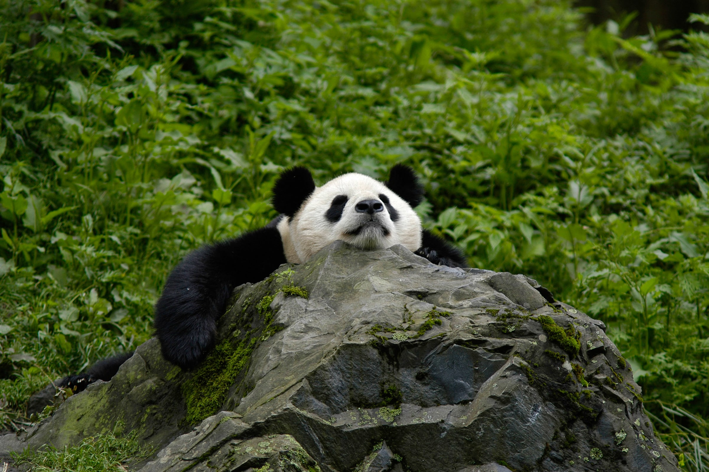
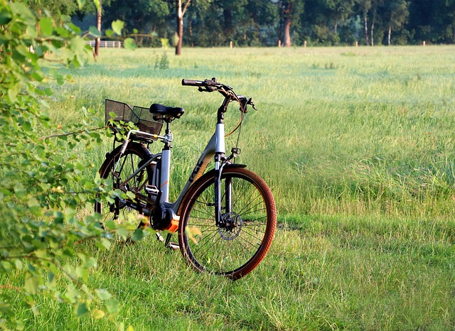
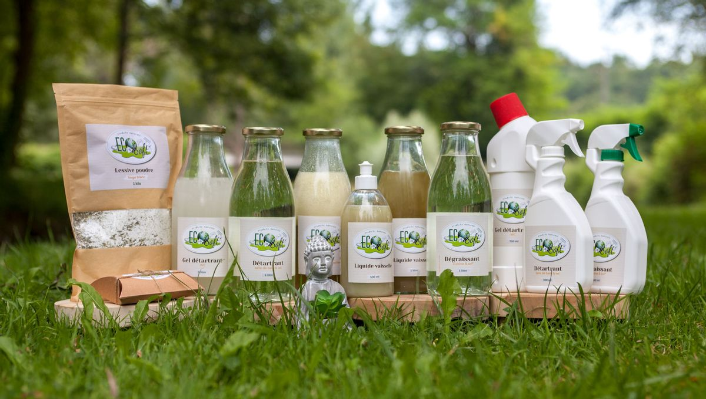

Bienvenue sur notre nouvelle boutique
Des produits solitaires et engagés
- Une gamme de produits pour réduire votre empreinte écologique
- Des produits naturels et labellisés
- Fabriqués de manière responsable
- Des bénéfices en soutien à des programmes écologiques
Contribuez à la protection de la biodiversité par votre achat.
Merci pour votre soutien !
Fun Fact 🌱
Les pandas géants sont souvent perçus comme des symboles de conservation de la nature. Ils jouent un rôle essentiel dans la préservation des forêts de bambou, un écosystème vital pour de nombreuses espèces en danger. En préservant l’habitat des pandas, nous aidons également d'autres espèces à survivre, tout en luttant contre le changement climatique. 🌍
Et saviez-vous ? Les pandas passent jusqu'à 14 heures par jour à manger du bambou ! Ce comportement aide à maintenir l'équilibre de leur habitat naturel, un exemple parfait de la manière dont la nature sait s’autoréguler.
Nos catégories de produits
Cliquez sur les images des catégories pour accéder aux produits disponibles dans chaque section de la boutique!
Vélo
Maison
Sacouches et Sacs écologiques